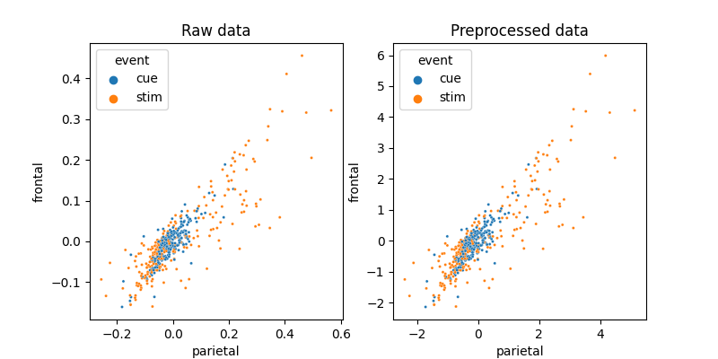
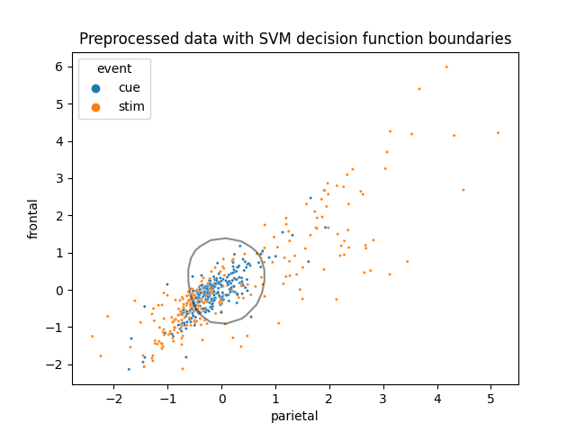

Note
Go to the end to download the full example code.
Inspecting SVM models
This example uses the ‘fmri’ dataset, performs simple binary classification using a Support Vector Machine classifier and analyse the model.
References
Waskom, M.L., Frank, M.C., Wagner, A.D. (2016). Adaptive engagement of cognitive control in context-dependent decision-making. Cerebral Cortex.
# Authors: Federico Raimondo <f.raimondo@fz-juelich.de>
#
# License: AGPL
import numpy as np
from sklearn.model_selection import GroupShuffleSplit
import matplotlib.pyplot as plt
import seaborn as sns
from seaborn import load_dataset
from julearn import run_cross_validation
from julearn.utils import configure_logging
Set the logging level to info to see extra information
configure_logging(level='INFO')
2026-05-29 20:44:46,844 - julearn - INFO - ===== Lib Versions =====
2026-05-29 20:44:46,844 - julearn - INFO - numpy: 1.19.3
2026-05-29 20:44:46,844 - julearn - INFO - scipy: 1.9.3
2026-05-29 20:44:46,844 - julearn - INFO - sklearn: 0.23.2
2026-05-29 20:44:46,844 - julearn - INFO - pandas: 1.4.4
2026-05-29 20:44:46,844 - julearn - INFO - julearn: 0.2.3
2026-05-29 20:44:46,844 - julearn - INFO - ========================
Dealing with Cross-Validation techinques
df_fmri = load_dataset('fmri')
First, lets get some information on what the dataset has:
print(df_fmri.head())
subject timepoint event region signal
0 s13 18 stim parietal -0.017552
1 s5 14 stim parietal -0.080883
2 s12 18 stim parietal -0.081033
3 s11 18 stim parietal -0.046134
4 s10 18 stim parietal -0.037970
From this information, we can infer that it is an fMRI study in which there were several subjects, timepoints, events and signal extracted from several brain regions.
Lets check how many kinds of each we have.
print(df_fmri['event'].unique())
print(df_fmri['region'].unique())
print(sorted(df_fmri['timepoint'].unique()))
print(df_fmri['subject'].unique())
['stim' 'cue']
['parietal' 'frontal']
[0, 1, 2, 3, 4, 5, 6, 7, 8, 9, 10, 11, 12, 13, 14, 15, 16, 17, 18]
['s13' 's5' 's12' 's11' 's10' 's9' 's8' 's7' 's6' 's4' 's3' 's2' 's1' 's0']
We have data from parietal and frontal regions during 2 types of events (cue and stim) during 18 timepoints and for 14 subjects. Lets see how many samples we have for each condition
print(df_fmri.groupby(['subject', 'timepoint', 'event', 'region']).count())
print(np.unique(df_fmri.groupby(
['subject', 'timepoint', 'event', 'region']).count().values))
signal
subject timepoint event region
s0 0 cue frontal 1
parietal 1
stim frontal 1
parietal 1
1 cue frontal 1
... ...
s9 17 stim parietal 1
18 cue frontal 1
parietal 1
stim frontal 1
parietal 1
[1064 rows x 1 columns]
[1]
We have exactly one value per condition.
Lets try to build a model, that given both parietal and frontal signal, predicts if the event was a cue or a stim.
First we define our X and y variables.
In order for this to work, both parietal and frontal must be columns. We need to pivot the table.
The values of region will be the columns. The column signal will be the values. And the columns subject, timepoint and event will be the index
df_fmri = df_fmri.pivot(
index=['subject', 'timepoint', 'event'],
columns='region',
values='signal')
df_fmri = df_fmri.reset_index()
We will use a Support Vector Machine.
2026-05-29 20:44:46,866 - julearn - INFO - Using default CV
2026-05-29 20:44:46,867 - julearn - INFO - ==== Input Data ====
2026-05-29 20:44:46,867 - julearn - INFO - Using dataframe as input
2026-05-29 20:44:46,867 - julearn - INFO - Features: ['parietal', 'frontal']
2026-05-29 20:44:46,867 - julearn - INFO - Target: event
2026-05-29 20:44:46,867 - julearn - INFO - Expanded X: ['parietal', 'frontal']
2026-05-29 20:44:46,867 - julearn - INFO - Expanded Confounds: []
2026-05-29 20:44:46,868 - julearn - INFO - ====================
2026-05-29 20:44:46,868 - julearn - INFO -
2026-05-29 20:44:46,868 - julearn - INFO - ====== Model ======
2026-05-29 20:44:46,868 - julearn - INFO - Obtaining model by name: svm
2026-05-29 20:44:46,868 - julearn - INFO - ===================
2026-05-29 20:44:46,868 - julearn - INFO -
2026-05-29 20:44:46,868 - julearn - INFO - CV interpreted as RepeatedKFold with 5 repetitions of 5 folds
0.7221618762123082
This results indicate that we can decode the kind of event by looking at the parietal and frontal signal. However, that claim is true only if we have some data from the same subject already acquired.
The problem is that we split the data randomly into 5 folds (default, see
run_cross_validation()). This means that data from one subject could
be both in the training and the testing set. If this is the case, then the
model can learn the subjects’ specific characteristics and apply it to the
testing set. Thus, it is not true that we can decode it for an unseen
subject, but for an unseen timepoint for a subject that for whom we already
have data.
To test for unseen subject, we need to make sure that all the data from each subject is either on the training or the testing set, but not in both.
We can use scikit-learn’s GroupShuffleSplit (see Cross Validation). And specify which is the grouping column using the group parameter.
By setting return_estimator=’final’, the run_cross_validation()
function return the estimator fitted with all the data. We will use this
later to do some analysis.
2026-05-29 20:44:47,254 - julearn - INFO - ==== Input Data ====
2026-05-29 20:44:47,254 - julearn - INFO - Using dataframe as input
2026-05-29 20:44:47,254 - julearn - INFO - Features: ['parietal', 'frontal']
2026-05-29 20:44:47,254 - julearn - INFO - Target: event
2026-05-29 20:44:47,254 - julearn - INFO - Expanded X: ['parietal', 'frontal']
2026-05-29 20:44:47,254 - julearn - INFO - Expanded Confounds: []
2026-05-29 20:44:47,255 - julearn - INFO - Using subject as groups
2026-05-29 20:44:47,255 - julearn - INFO - ====================
2026-05-29 20:44:47,255 - julearn - INFO -
2026-05-29 20:44:47,255 - julearn - INFO - ====== Model ======
2026-05-29 20:44:47,255 - julearn - INFO - Obtaining model by name: svm
2026-05-29 20:44:47,255 - julearn - INFO - ===================
2026-05-29 20:44:47,255 - julearn - INFO -
2026-05-29 20:44:47,255 - julearn - INFO - Using scikit-learn CV scheme GroupShuffleSplit(n_splits=5, random_state=42, test_size=0.5, train_size=None)
0.7210526315789474
After testing on independent subjects, we can now claim that given a new subject, we can predict the kind of event.
Lets do some visualization on how these two features interact and what the preprocessing part of the model does.
fig, axes = plt.subplots(1, 2, figsize=(8, 4))
sns.scatterplot(x='parietal', y='frontal', hue='event', data=df_fmri,
ax=axes[0], s=5)
axes[0].set_title('Raw data')
pre_X, pre_y = model.preprocess(df_fmri[X], df_fmri[y])
pre_df = pre_X.join(pre_y)
sns.scatterplot(x='parietal', y='frontal', hue='event', data=pre_df,
ax=axes[1], s=5)
axes[1].set_title('Preprocessed data')

Text(0.5, 1.0, 'Preprocessed data')
In this case, the preprocessing is nothing more than a Standard Scaler.
It seems that the data is not quite linearly separable. Lets now visualize how the SVM does this complex task.
clf = model['svm']
ax = sns.scatterplot(x='parietal', y='frontal', hue='event', data=pre_df, s=5)
xlim = ax.get_xlim()
ylim = ax.get_ylim()
# create grid to evaluate model
xx = np.linspace(xlim[0], xlim[1], 30)
yy = np.linspace(ylim[0], ylim[1], 30)
YY, XX = np.meshgrid(yy, xx)
xy = np.vstack([XX.ravel(), YY.ravel()]).T
Z = clf.decision_function(xy).reshape(XX.shape)
a = ax.contour(XX, YY, Z, colors='k', levels=[0], alpha=0.5, linestyles=['-'])
ax.set_title('Preprocessed data with SVM decision function boundaries')

Text(0.5, 1.0, 'Preprocessed data with SVM decision function boundaries')
Total running time of the script: (0 minutes 3.312 seconds)